Dr. Swati Hurmade
Dentist turned Health Informatician focused on data, analytics, interoperability, and clinical decision support.
CGPA
Healthcare Projects
Tools Used
Healthcare Datasets Analyzed
Projects
My Portfolio
Immunization Coverage and Trends Analysis
Healthcare analytics project analyzing immunization coverage, gaps, seasonal trends using OpenEMR patient and vaccination data.
- Designed normalized MySQL database from OpenEMR patient and immunization data
- Performed SQL driven analysis of age, geography, and encounter patterns
- Visualized vaccination trends and coverage gaps using Python analytics tools
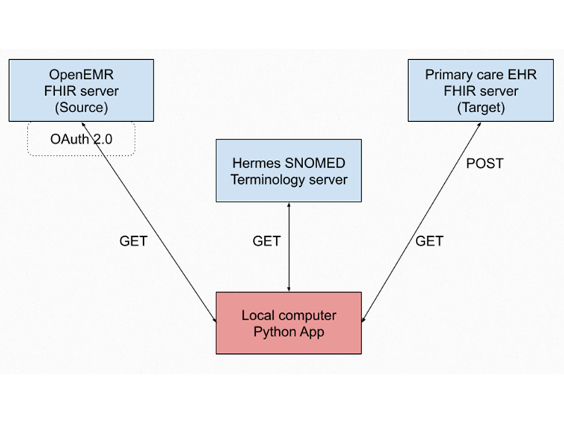
FHIR Powered ETL Pipeline
Standards based pipeline to extract, transform, and load clinical data from FHIR servers into analysis ready outputs.
- FHIR API integration with OAuth 2.0
- Terminology mapping using SNOMED
- Structured loading for interoperability and analytics
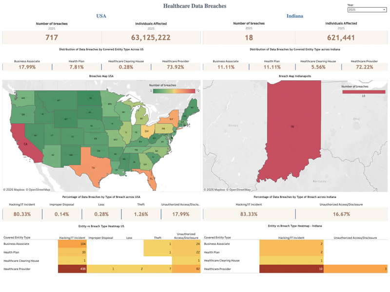
Healthcare Data Breaches 2024 to 2025
Interactive Tableau dashboard analyzing the OCR healthcare data breach trends and impact across 2024 to 2025.
- Trend views and breakdowns by type and volume
- Filters for quick exploration
- Designed for clear reporting
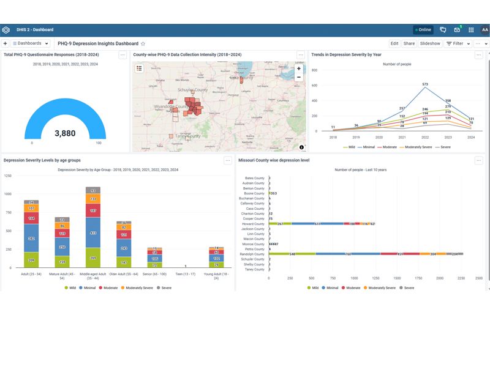
Community Mental Health Dashboard Using PHQ 9 Data
Community health dashboard analyzing PHQ 9 depression screening data across counties, age groups, years to monitor mental health trends.
- Built DHIS2 dashboard to visualize PHQ 9 depression severity data
- Integrated geographic mapping using QGIS and GeoJSON layers
- Analyzed trends across counties, age groups, and years 2018 to 2024
Predictors of Alzheimer’s Using Statistical Methods
R based analysis using logistic regression to identify predictors of Alzheimer’s diagnosis outcomes.
- Modeled MMSE and behavioral symptom variables
- Evaluated feature impact and odds ratios
- Used anonymized public dataset
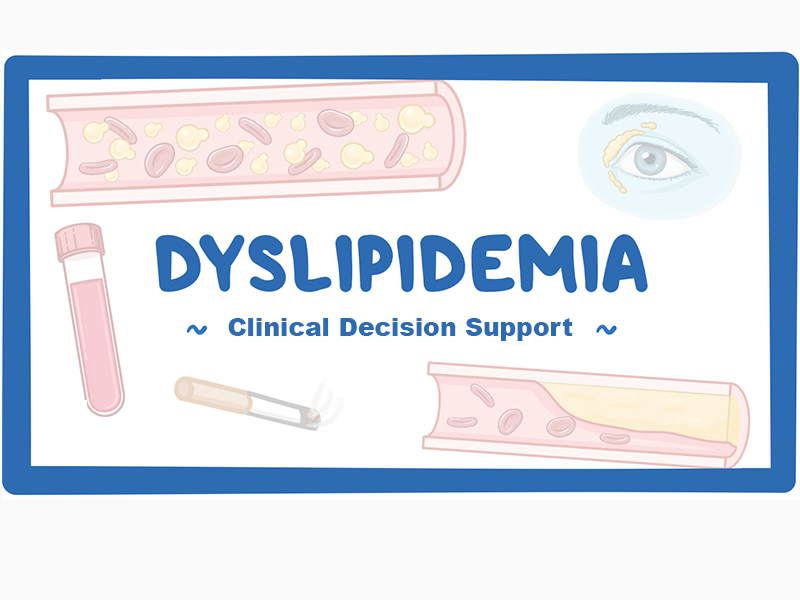
Clinical Decision Support for Dyslipidemia Management
Clinical decision support system implementing AACE lipid management guidelines to assist risk based treatment decisions.
- Encodes AACE dyslipidemia treatment guidelines into rule based logic
- Evaluates lipid levels and cardiovascular risk factors
- Generates guideline aligned treatment recommendations
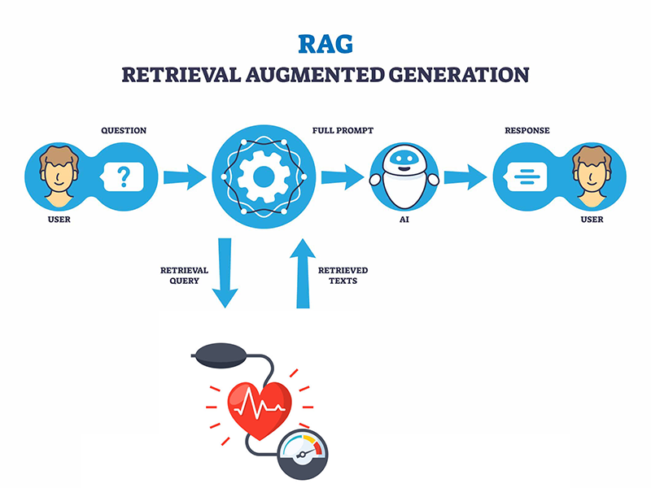
High Blood Pressure RAG Clinical Assistant
Retrieval augmented generation system that answers hypertension management questions using clinical guideline knowledge.
- Implements RAG pipeline for guideline grounded responses
- Retrieves relevant hypertension guidance before LLM generation
- Supports clinical queries with evidence based outputs
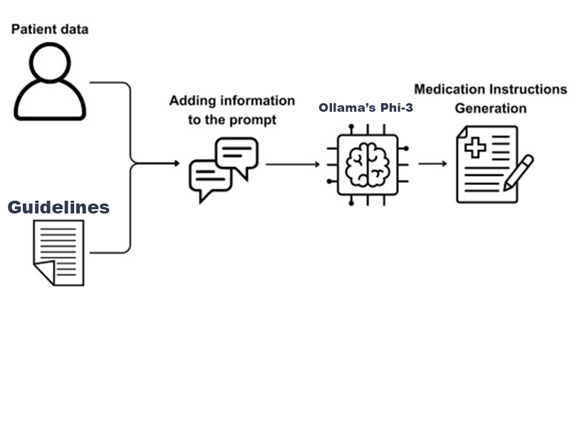
Local CDSS Prototype with Ollama Phi 3
Prototype clinical decision support system using a locally hosted Phi 3 model to assist pediatric fever triage.
- Integrated Ollama hosted Phi 3 model for local inference
- Processes pediatric symptom inputs for triage guidance
- Demonstrates privacy preserving local AI clinical support
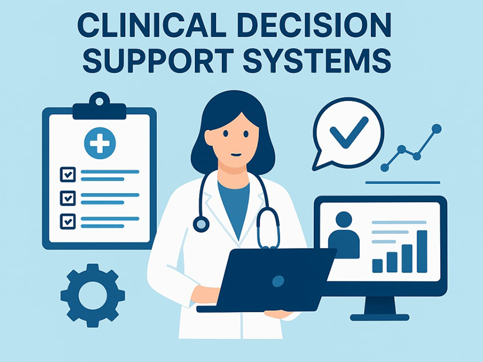
Chemical Eye Injury Clinical Decision Support System
Rule based CDSS that assigns burn grade and outputs treatment recommendations for chemical eye injuries.
- Hughes classification with Thoft modification
- Rules implemented in CLIPS, integrated with Python via CLIPSPy
- Processes patient input from CSV and generates recommendations
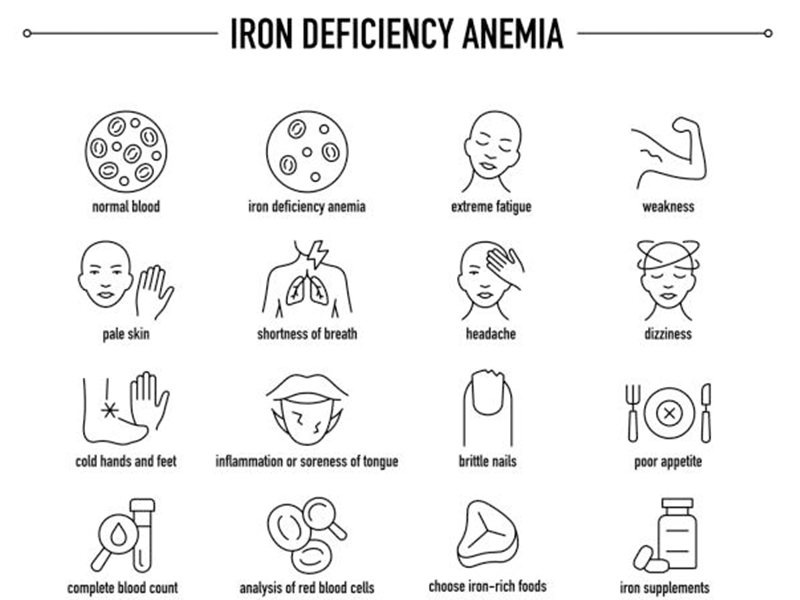
CDR Reminder for Iron Deficiency Anemia Assessment
Clinical reminder implemented in OpenEMR for adult males with iron deficiency anemia to improve guideline adherence.
- Structured reminder logic based on clinical guidance
- Designed prompts to support timely assessment steps
- Used LLMs to draft and refine reminder structure
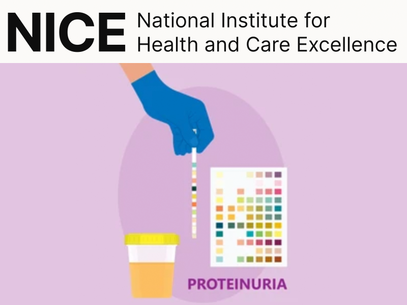
NICE CKD Proteinuria Management Tool
Guideline driven tool that evaluates proteinuria in CKD patients and provides management recommendations based on NICE guidance.
- Applies NICE CKD guideline logic for proteinuria evaluation
- Processes clinical indicators including albumin creatinine ratio
- Outputs guideline aligned monitoring and treatment steps
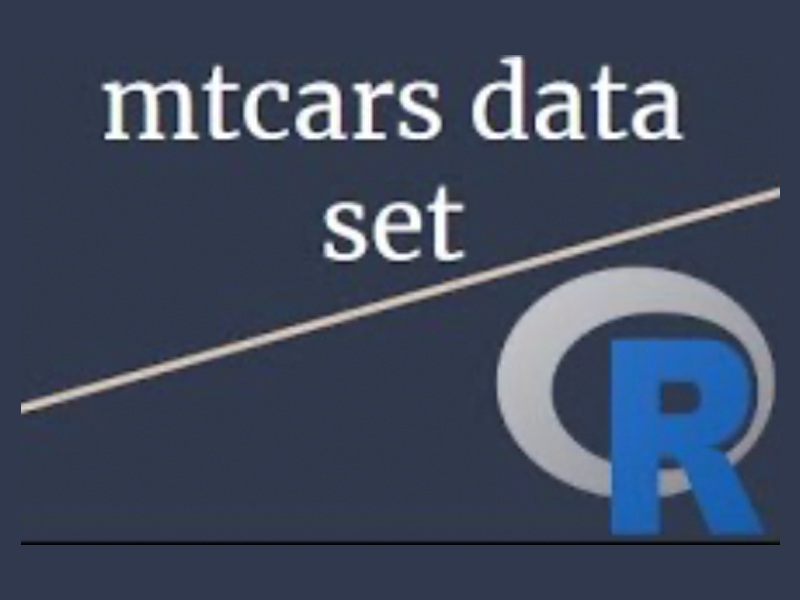
MTCARS Data Analysis
Exploratory statistical analysis of the mtcars dataset using R to examine relationships between vehicle characteristics and performance.
- Conducted descriptive and exploratory data analysis in R
- Evaluated relationships between horsepower, weight, and MPG
- Produced statistical summaries and visualizations
Resume
My Journey
Health Informatics Intern
- Designed and deployed a scalable Community Wellness Dashboard in DHIS2, transforming raw PHQ-9 depression screening data (2018–2024, 3,880 patients across Indiana and Missouri) into interactive visualizations.
- Cleaned, structured, and engineered a multi-year PHQ-9 dataset, creating derived fields (Total Score, Severity Levels, Age Groups, Years) to enable advanced statistical and demographic analysis.
- Developed and implemented bar/line charts, pivot tables, and geospatial maps (QGIS + GeoJSON) to monitor depression severity trends across time, geography, and population groups.
- Identified and presented key insights, including a 2022 post-pandemic peak in depression severity, elevated prevalence among the 25–44 age group, and county-level disparities with highest screening concentration in Randolph and Howard
Graduate Teaching Assistant
- Assisted in facilitating graduate-level courses, Security and Privacy Policies and Regulations for Health Care, Practicum in Health Information Technology, and Thesis/Project in Health Informatics.
- Managed grading and academic records for 80+ students; served as liaison between professor and students, addressing queries and ensuring clear, timely communication.
Associate Dentist
- Delivered comprehensive patient care, including the successful digitalization and meticulous organization of three years’ of patient data, resulting in an improvement of 30% in the efficiency and effectiveness of the practice’s administrative processes.
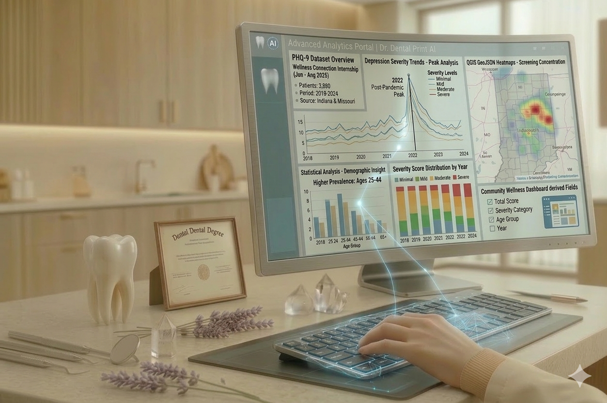
Indiana University
People’s College of Dental Sciences and Research Centre
What I know
Skills
Healthcare Informatics
Languages
Data and Analytics
Databases and Data Design
APIs and Data Formats
Business and Process
What I use
Tools
Healthcare
Analytics
Development
Databases
Productivity
So, this is me
My Story
I’m Dr. Swati Hurmade, a clinician turned health informatician currently pursuing my Master's in Health Informatics at Indiana University Indianapolis.
Where it started
From a young age, I was drawn to healthcare and the impact it can have on people’s lives. My journey began in dentistry, where I learned to care for patients closely and understand how small details in health data can shape better outcomes. Over time, that curiosity grew into a deeper interest in how information, technology, and analysis can transform the way care is delivered.
Why informatics
As I transitioned into health informatics, I discovered a strong passion for working with data to improve decision making and patient outcomes. I enjoy exploring patterns, building meaningful visualizations, and turning complex datasets into clear insights that support real world change. My academic work and professional experience have allowed me to work with clinical data, develop dashboards, and apply statistical and technical tools to uncover trends that matter.
How I work
I have had the opportunity to contribute across clinical practice, academic settings, and healthcare analytics projects. From organizing patient records and improving workflows in dental practice to building interactive dashboards and predictive models in health informatics, I focus on creating work that is thoughtful, accurate, and impactful. I value clarity, collaboration, and continuous learning, and I aim to bring those principles into everything I build.
Inspired by both healthcare and technology, I am motivated by the idea that behind every dataset is a patient, a community, and a story worth understanding. I look forward to continuing to create solutions that improve care, strengthen systems, and make health information more meaningful and accessible.
Let’s work together
Hire Me